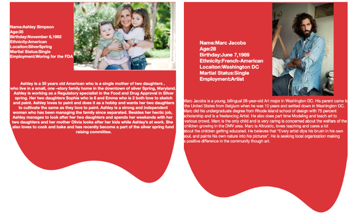

Usability Evaluation
Redesign
Project Description
This project helped conceptualizing and understanding the fundamental human-computer interaction issues, as well as user testing and interaction design processes.
Project Details
| Type | Individual project. |
| Client | createartscenter.org |
| Date | Jan 2017 - May 2017 |
| Categories | Usability Evaluation |
About
The main purpose for conducting the usability test for the Create Art center is to address the client goals for the website.Another Reason included is to evaluate the possible problems faced during the usability of the website and improve the user experience of the website. During this process, I documented the information with user analysis along with environmental analysis.
Process followed
COMPETITIVE ANALYSIS:
Compare sites with similar purpose to study the difference and improve the negatives.Comparison was done with various sites with considering the same background to understand how differently other sites showed the purpose of the website.Also,how the Usability problems were tackled.
CONTEXTUAL INQUIRY:
The contextual Inquiry involved briefly interviewing random participants and observed them using the site by giving them certain task to perform.
Method Involved:Using a script to brief the process that involved transition to task methodology.While the participants were performing the task observation was done to gauage the process of the participants.
CLIENT INTERVIEW:
Executive Director from the Create Arts Center represented being the client of the organiza-tion giving me information of the stakeholders goals, targeted audience, prospective audience, perception on how the website could be improved and what are his expectations.
USER INTERVIEW:
Two Random participants who were supposed to be recruited being the prospective user for the web-site who could do the evaluation and find out the usability errors in the website
TASK ANALYSIS
Hierarchical task analysis shows the task performed by the user using the website by the evalu-ator. The Evaluator chooses five task and walk through each task to create a step by step list of stages to understand the usability function or issues they face during the process.

PERSONA CREATION
Personas were created to get an idea about the prospective users using the website based on the information given by the client.

HUERISTIC EVALUATION
Heuristic evaluation was done by two evaluators guided by a list of guidelines and as to how to find the issues of the website and give it a severity rating to understand the issue in a big-ger picture.

PARTICIPATORY DESIGN
Participatory design is a method of collaboration between the participant and the researcher and involving maximum involvement from the user.
Brainstroming ideas
 THINK ALOUD
THINK ALOUDThink Aloud method basically gave an understanding of what the user actually think of the de-sign.
MEDIUM FIDELIY PROTTYPE
A medium fidelity prototype is a prototype with limited functionality but clickable areas which presents the interactions and navigation possibilities of an application

USABILITY STUDY
Usability study was done to evaluate the interface which was both the prototype and the web-site.Usability study was done in such a way that the researcher finds out the frustration and deadlocks of website used by the user completing a particular task.
EYE TRACKING
Eye tracking is the measurement of eye activity. Where do we look? What do we ignore? When do we blink? How does the pupil react to different stimuli?. There are many different methods of exploring eye data
{kind=link}